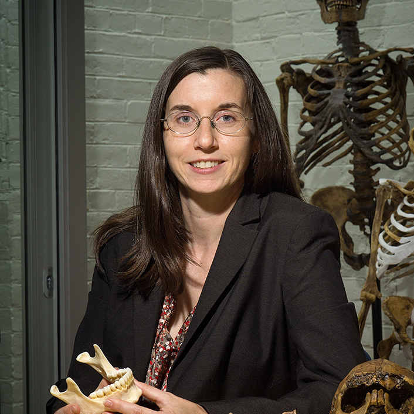
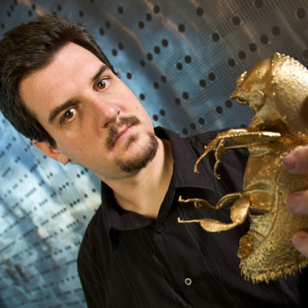

I have been very fortunate to work with a wonderful array of people during my research. Here is a partial list of people who've contributed to my research, thinking, and work in evolutionary biology.

Tanya M. Smith
Associate Professor, Griffith University.
Website »
Albert S. Colman
Geochemist, Houston, Texas.
Website »

Paul Tafforeau
Staff scientist, European Synchrotron Radiation Facility, Grenoble, France.
Website »

Felicitas B. Bidlack
Associate Member of Staff, Forsyth Institute, Cambridge, MA.
Website »
Gregory M. Green
Postdoctoral Research Fellow, Physics Department, Stanford University.
Website »

Gerry Olack
Stable light isotope laboratory director, Department of the Geophysical Sciences, University of Chicago.
Website »
Dan Lieberman
Edwin M. Lerner II Professor of Biological Sciences, Harvard University.
Website »
David R. Pilbeam
Henry Ford II Professor of Human Evolution, Harvard University.
Website »

Samuel S. Urlacher
Postdoctoral Research Fellow, Duke University.
Website »
Bridget A. Alex
Lecturer and science writer, Human Evolutionary Biology, Harvard University.
Website »
Katie Zink
Lecturer, Human Evolutionary Biology, Harvard University.
Website »

Neil Roach
Lecturer, Human Evolutionary Biology, Harvard University.
Website »

Alicia Breakey
PhD, Human Evolutionary Biology, Harvard University.
Website »
Kate Carter
Director of Community Science Education, National Center for Science Education.
Website »
Eric Castillo
PhD, Human Evolutionary Biology, Harvard University.
Website »

Brian Addison
PhD, Human Evolutionary Biology, Harvard University.
Website »

Andrew Yegian
Doctoral candidate, Human Evolutionary Biology, Harvard University.
Website »

Andy Cunningham
Doctoral candidate, Human Evolutionary Biology, Harvard University.
Website »

Heather Shattuck-Heidorn
PhD, Human Evolutionary Biology, Harvard University.
Website »

Zarin Machanda
Assistant Professor, University.
Website »

Manvir Singh
Doctoral candidate, Human Evolutionary Biology, Harvard University.
Website »
Meg Lynch
Department Administrator, Human Evolutionary Biology, Harvard University.
Website »
Andrew Biewener
Henry Ford II Professor of Human Evolution, Harvard University
Website »
Pedro Ramirez
Animal care director, Concord Field Station, Harvard University
Website »
James Weaver
Staff scientist, Wyss Institute, Harvard University
Website »

Scott A. Blumenthal
Newton International Fellow, Research Laboratory for Archaeology, University of Oxford.
Website »

Kendra L. Chritz
Postdoctoral fellow, Biology, University of Utah.
Website »
Erik Otárola-Castillo
Faculty member, Department of Anthropology, Purdue University.
Website »
Aric Mine
Lecturer, Fresno State University.
Website »
Sora Kim
Assistant Professor, Earth and Environmental Sciences, University of Kentucky.
Website »

Milford Wolpoff
Professor, Department of Anthropology, University of Michigan.
Website »

Laura MacLatchy
Professor, Department of Anthropology, University of Michigan.
Website »
Karen Kieser
Seres Therapeutics, Cambridge MA.
Website »
Anthony Green
Software engineer, Google, Zurich.
Website »

Oles Szejman
Loved cousin and resident scholar, Central Square, Cambridge.